vhu_csv <- read.csv("vhu_centroids.csv")SPPA
Quadrat Count
Vaihu
vhu_csv2 <- as_tibble(vhu_csv)vhu_csv2 # A tibble: 3,131 × 6
layer level class id x y
<int> <chr> <int> <int> <dbl> <dbl>
1 1 patch 0 1 0.0775 24.7
2 1 patch 0 2 0.0588 24.0
3 1 patch 0 3 0.0368 23.7
4 1 patch 0 4 0.0318 23.4
5 1 patch 0 5 0.0501 23.1
6 1 patch 0 6 0.0125 22.8
7 1 patch 0 7 0.0794 21.7
8 1 patch 0 8 0.00269 21.0
9 1 patch 0 9 0.0485 20.8
10 1 patch 0 10 0.0824 16.7
# ℹ 3,121 more rowsDefine window for spatial pattern analyses based on the extent defined above
vhu_window <- owin(c(0, 10), c(0, 25))attach(vhu_window)vhu_corals <- ppp(vhu_csv2$x, vhu_csv2$y, window = vhu_window)Summary information
summary(vhu_corals)Planar point pattern: 3131 points
Average intensity 12.524 points per square unit
Coordinates are given to 7 decimal places
Window: rectangle = [0, 10] x [0, 25] units
Window area = 250 square unitsThis summary shows there are 3131 points (pocilloporid coral colony) and provides the observed, lambda. The density plot can be a helpful visualization of intensity of points across the plot. By plotting the spatial intensity this way, spatial trends in the point occurrences that may violate the assumption of homogeneous point process.
Density plots
plot(
density(vhu_corals)
)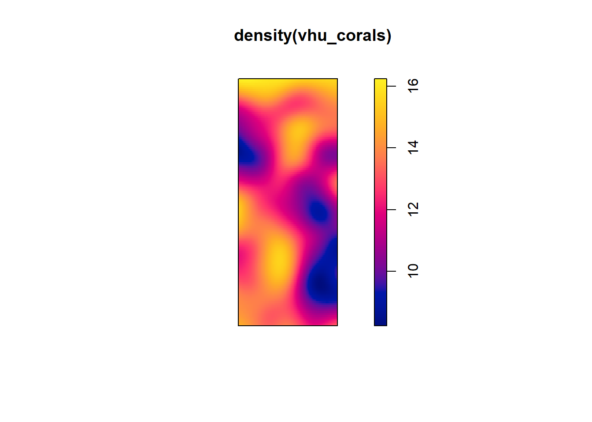
Alter smoothing parameter
plot(
density(vhu_corals, 1)
) Contour plot
contour(
density(vhu_corals, 1)
)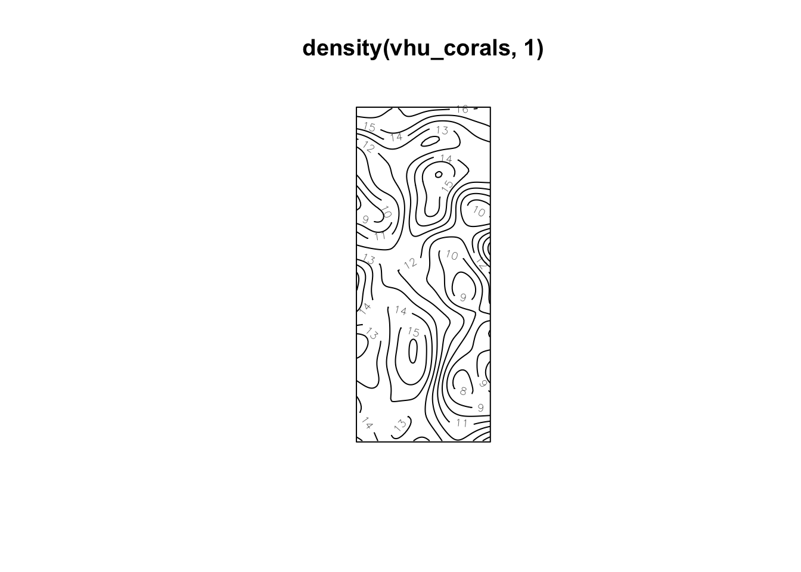
We can also make tallies of counts of point locations based on quadrats overlaid on the plot. To determine whether these quadrat counts conform to CSR (i.e., a homogeneous Poisson process), use a simple Chi-Square test statistic.
Quadrat counts
Counts in 10 x 25 m quadrats
vhu_Q <- quadratcount(vhu_corals, nx = 10, ny = 25)Plot
plot(vhu_corals, cex = 1)
plot(vhu_Q, add = TRUE, cex = 1)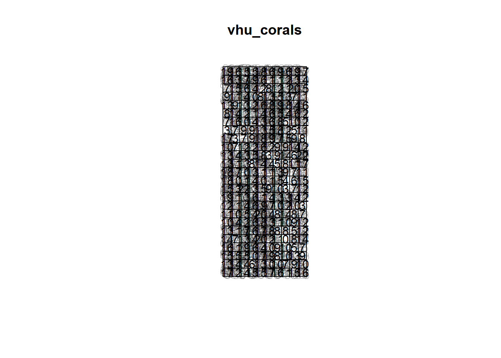
Chi-sq test for complete spatial randomness, CSR
quadrat.test(vhu_corals, nx = 10, ny = 25, method = "Chisq")
Chi-squared test of CSR using quadrat counts
data: vhu_corals
X2 = 308.08, df = 249, p-value = 0.0127
alternative hypothesis: two.sided
Quadrats: 10 by 25 grid of tilesThe test statistic suggests highly a non-random point pattern at the scale of the quadrat defined. Note that this test is more akin to a first-order point pattern analysis because it is based on the dispersion of points among sampling quadrats.
West - Manavai
man_csv <- read.csv("man_centroids.csv")man_csv2 <- as_tibble(man_csv)man_csv2 # A tibble: 372 × 6
layer level class id x y
<int> <chr> <int> <int> <dbl> <dbl>
1 1 patch 0 1 0.0579 20.6
2 1 patch 0 2 0.0812 20.5
3 1 patch 0 3 0.00173 19.4
4 1 patch 0 4 0.0281 12.7
5 1 patch 0 5 0.0164 12.6
6 1 patch 0 6 0.0550 10.8
7 1 patch 0 7 0.0111 8.88
8 1 patch 0 8 0.0366 8.51
9 1 patch 0 9 0.0589 13.3
10 1 patch 0 10 0.0825 13.0
# ℹ 362 more rowsDefine window for spatial pattern analyses based on the extent defined above
man_window <- owin(c(0, 10), c(0, 25))attach(man_window)The following objects are masked from vhu_window:
type, units, xrange, yrangeman_corals <- ppp(man_csv2$x, man_csv2$y, window = man_window)Summary information
summary(man_corals)Planar point pattern: 372 points
Average intensity 1.488 points per square unit
Coordinates are given to 7 decimal places
Window: rectangle = [0, 10] x [0, 25] units
Window area = 250 square unitsThis summary shows there are 3131 points (pocilloporid coral colony) and provides the observed, lambda. The density plot can be a helpful visualization of intensity of points across the plot. By plotting the spatial intensity this way, spatial trends in the point occurrences that may violate the assumption of homogeneous point process.
Density plots
plot(
density(man_corals)
)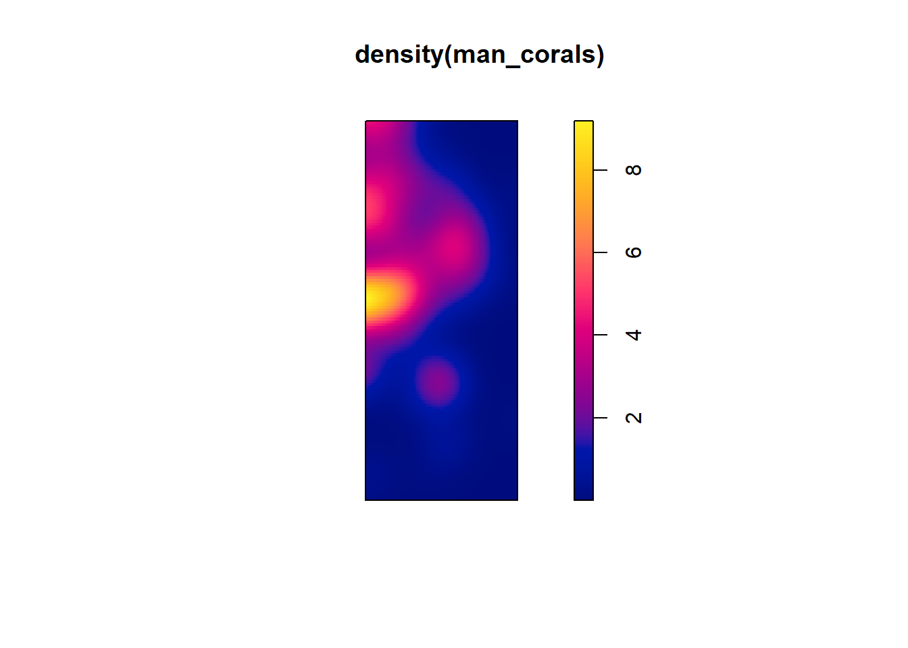
Alter smoothing parameter
plot(
density(man_corals, 1)
) 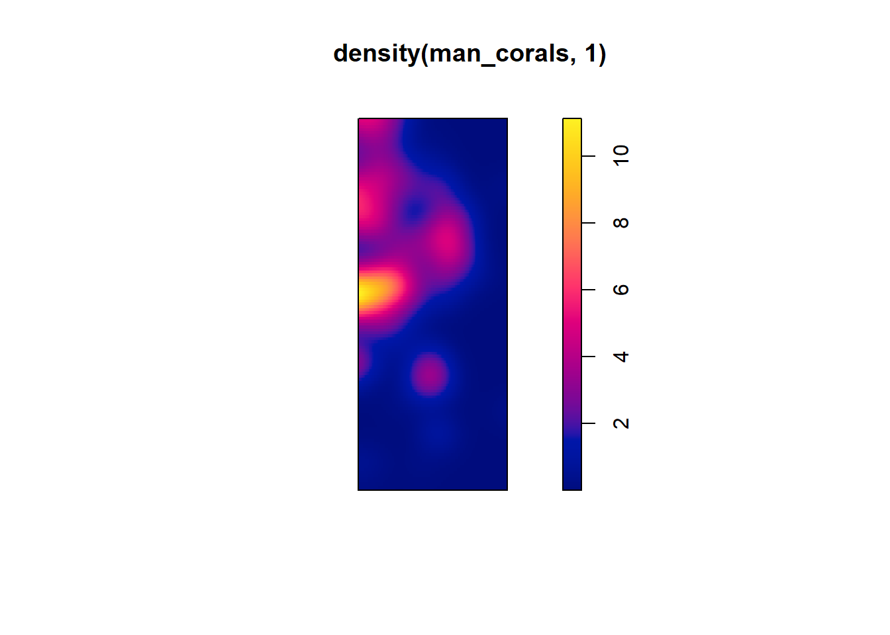
Contour plot
contour(
density(man_corals, 1)
)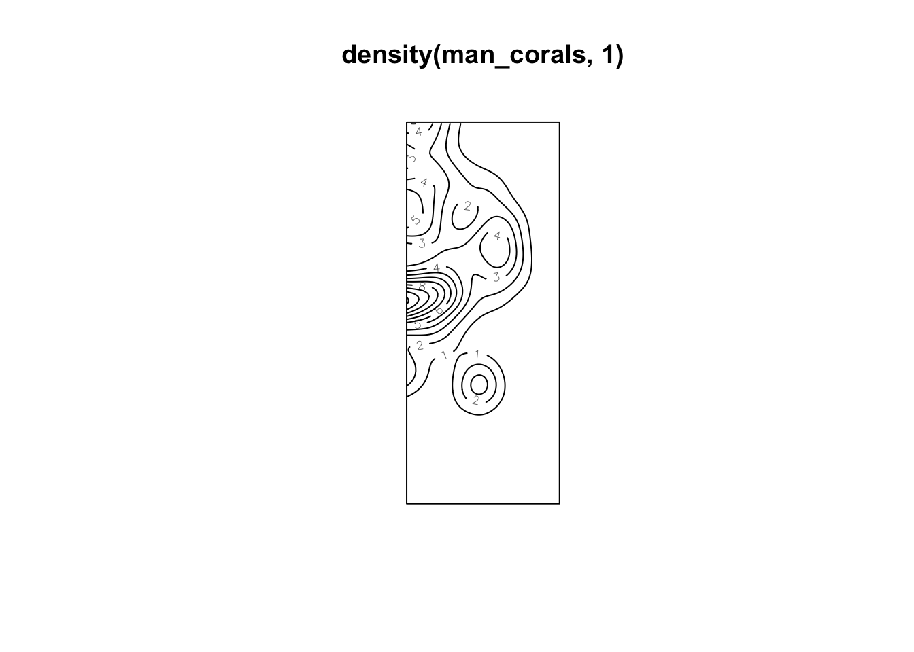
We can also make tallies of counts of point locations based on quadrats overlaid on the plot. To determine whether these quadrat counts conform to CSR (i.e., a homogeneous Poisson process), use a simple Chi-Square test statistic.
Quadrat counts
Counts in 10 x 25 m quadrats
man_Q <- quadratcount(man_corals, nx = 10, ny = 25)Plot
plot(man_corals, cex = 1)
plot(man_Q, add = TRUE, cex = 1)
Chi-sq test for complete spatial randomness, CSR
quadrat.test(man_corals, nx = 10, ny = 25, method = "Chisq")Warning: Some expected counts are small; chi^2 approximation may be inaccurate
Chi-squared test of CSR using quadrat counts
data: man_corals
X2 = 1394.1, df = 249, p-value < 2.2e-16
alternative hypothesis: two.sided
Quadrats: 10 by 25 grid of tilesNorth - Anakena
ana_csv <- read.csv("ana_centroids.csv")ana_csv2 <- as_tibble(ana_csv)ana_csv2 # A tibble: 136 × 6
layer level class id x y
<int> <chr> <int> <int> <dbl> <dbl>
1 1 patch 1 1 0.330 23.4
2 1 patch 1 2 0.343 23.7
3 1 patch 1 3 0.360 1.54
4 1 patch 1 4 0.477 11.2
5 1 patch 1 5 0.494 12.6
6 1 patch 1 6 0.547 17.4
7 1 patch 1 7 0.557 1.52
8 1 patch 1 8 0.587 16.3
9 1 patch 1 9 0.779 1.81
10 1 patch 1 10 0.749 0.270
# ℹ 126 more rowsDefine window for spatial pattern analyses based on the extent defined above
ana_window <- owin(c(0, 10), c(0, 25))attach(ana_window)The following objects are masked from man_window:
type, units, xrange, yrangeThe following objects are masked from vhu_window:
type, units, xrange, yrangeana_corals <- ppp(ana_csv2$x, ana_csv2$y, window = ana_window)Summary information
summary(ana_corals)Planar point pattern: 136 points
Average intensity 0.544 points per square unit
Coordinates are given to 7 decimal places
Window: rectangle = [0, 10] x [0, 25] units
Window area = 250 square unitsThis summary shows there are 3131 points (pocilloporid coral colony) and provides the observed, lambda. The density plot can be a helpful visualization of intensity of points across the plot. By plotting the spatial intensity this way, spatial trends in the point occurrences that may violate the assumption of homogeneous point process.
Density plots
plot(
density(ana_corals)
)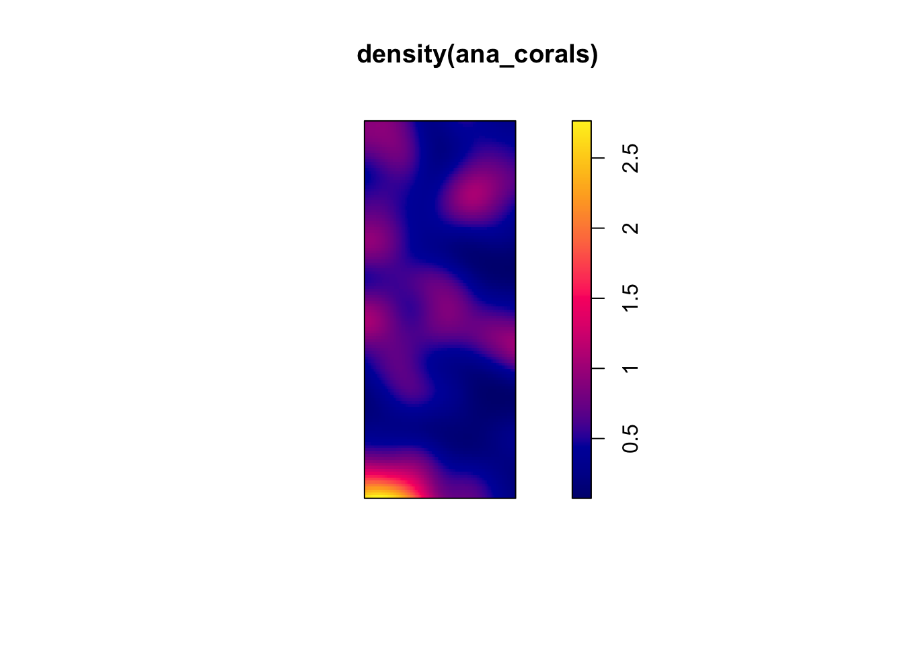
Alter smoothing parameter
plot(
density(ana_corals, 1)
) 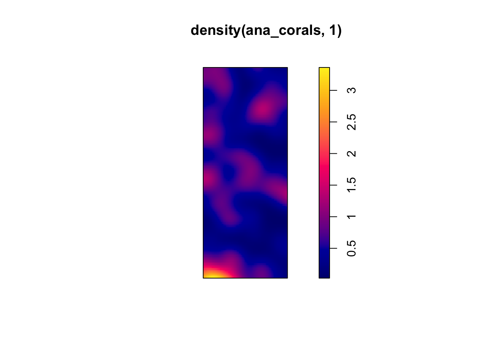
Contour plot
contour(
density(ana_corals, 1)
)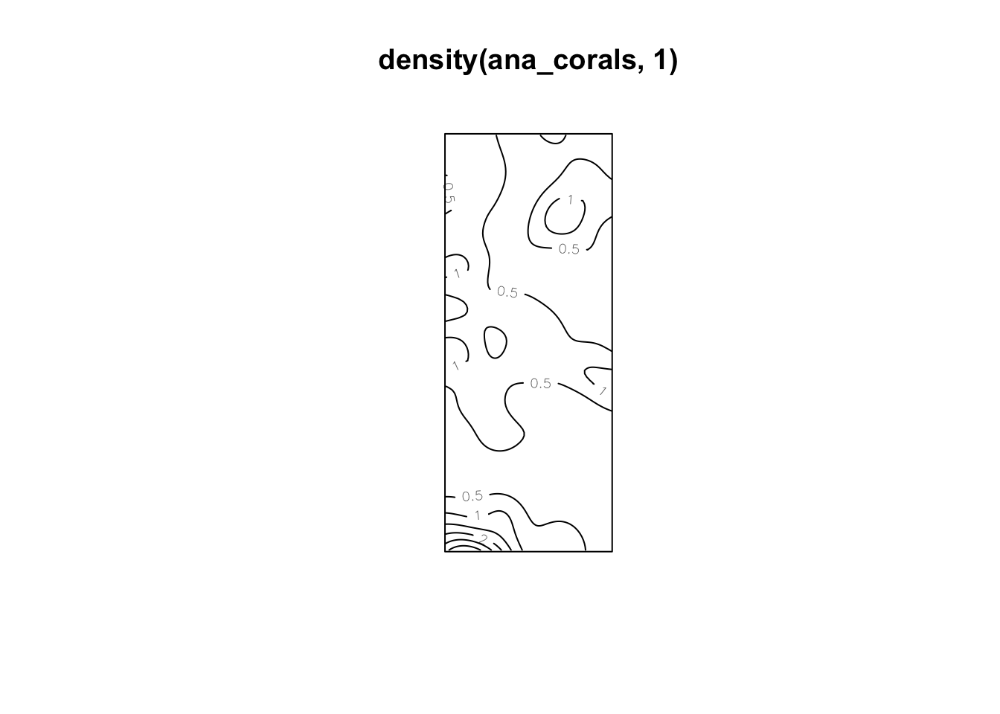
We can also make tallies of counts of point locations based on quadrats overlaid on the plot. To determine whether these quadrat counts conform to CSR (i.e., a homogeneous Poisson process), use a simple Chi-Square test statistic.
Quadrat counts
Counts in 10 x 25 m quadrats
ana_Q <- quadratcount(ana_corals, nx = 10, ny = 25)Plot
plot(ana_corals, cex = 1)
plot(ana_Q, add = TRUE, cex = 1)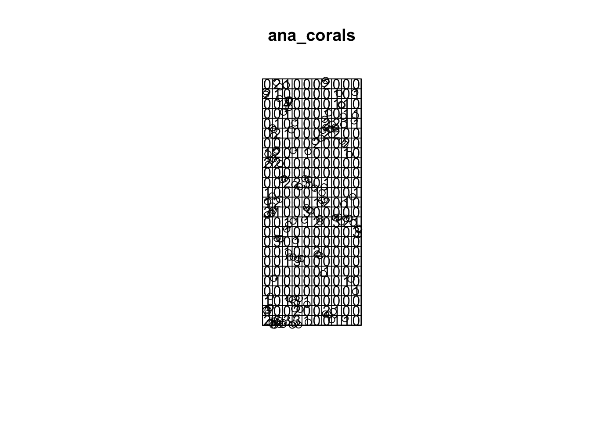
Chi-sq test for complete spatial randomness, CSR
quadrat.test(ana_corals, nx = 10, ny = 25, method = "Chisq")Warning: Some expected counts are small; chi^2 approximation may be inaccurate
Chi-squared test of CSR using quadrat counts
data: ana_corals
X2 = 397.09, df = 249, p-value = 1.389e-08
alternative hypothesis: two.sided
Quadrats: 10 by 25 grid of tilesThe test statistic suggests highly a non-random point pattern at the scale of the quadrat defined. Note that this test is more akin to a first-order point pattern analysis because it is based on the dispersion of points among sampling quadrats.
Ripley’s K function:
- Second-order point pattern analyses can readily be implemented in ‘spatstat’.
- Ripley’s K and the standard L functions
- Ignore edge effects with ‘(correction = “none”)’
Southeast - Vaihu
K_none_vhu <- Kest(vhu_corals, rmax = 5.0, correction = "none")- Plot K
plot(K_none_vhu, legend = F, main = "Southeast: Ripley's K")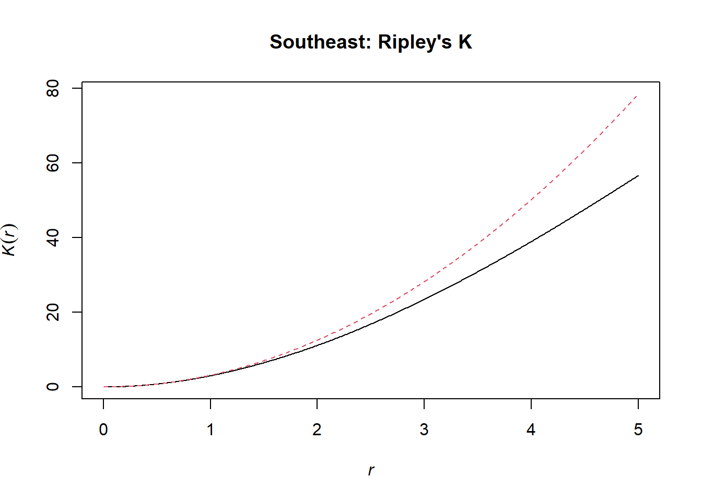
- Plot L with 1:1 expectation
L_none_vhu <- Lest(vhu_corals, rmax = 5.0, correction = "none")plot(L_none_vhu, legend = F, main = "Southeast: standardized L function (standardized 1:1)")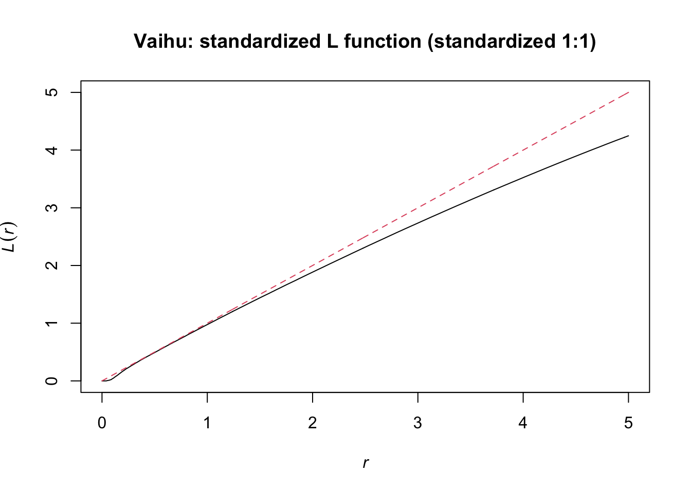
- Plot L with 0 expectation
plot(L_none_vhu, . - r ~ r, legend = F, main = "Southeast: standardized L function (standardized 0)")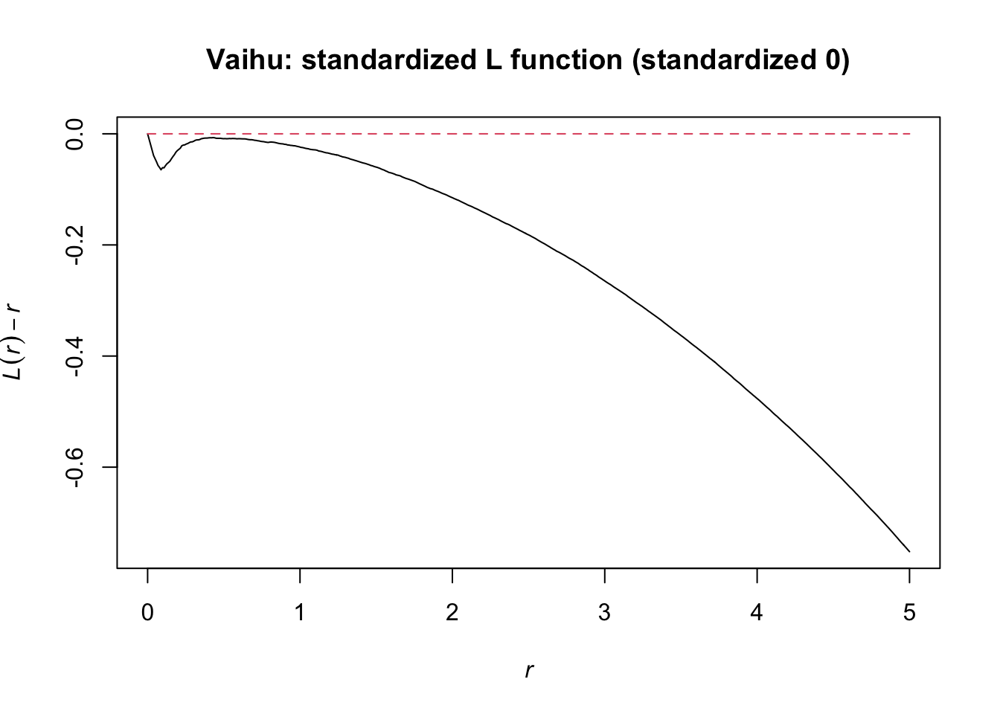
The above analysis ignores the problem of edge effects. spatstat provides a variety of edge corrections. Contrast an (1) isotropic and (2) translate correction for adjusting for boundary effects. The isotropic correction uses a simple weighting for the area sampled near the plot boundary (Ripley 1988), the translate correction uses a toroidal shift. We adjust for potential boundary effects by typing:
- Isotropic edge correction
L_iso_vhu <- Lest(vhu_corals, rmax = 5.0, correction = "isotropic")plot(L_iso_vhu, . - r ~ r, legend = F, main = "Southeast: standardzied L (isotropic correction)")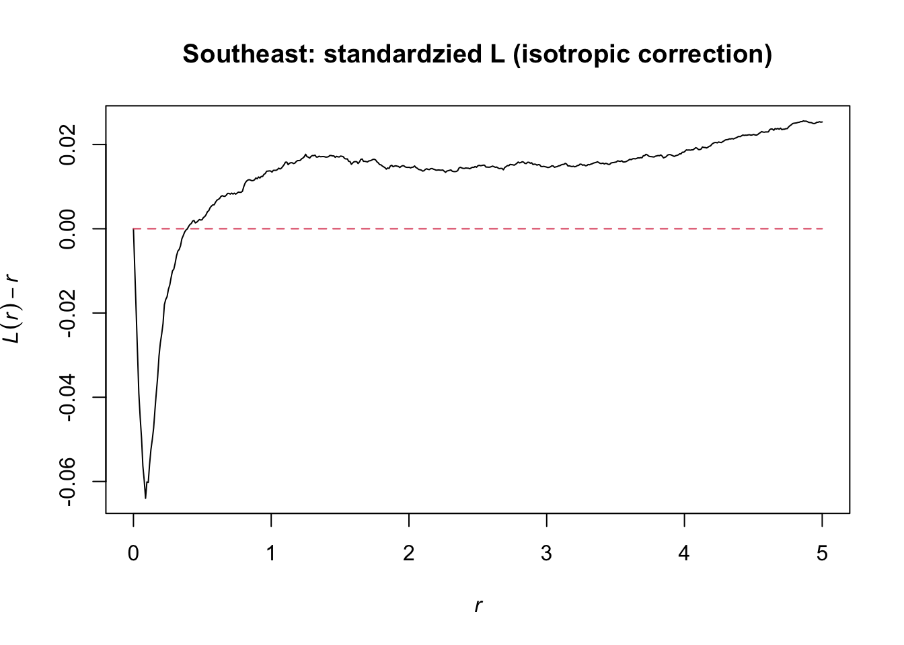
- Translate (toroidal) edge correction
L_trans_vhu <- Lest(vhu_corals, rmax = 5.0, correction = "trans")plot(L_trans_vhu, . - r ~ r, legend = F, main = "Southeast: standardzied L (translate correction)")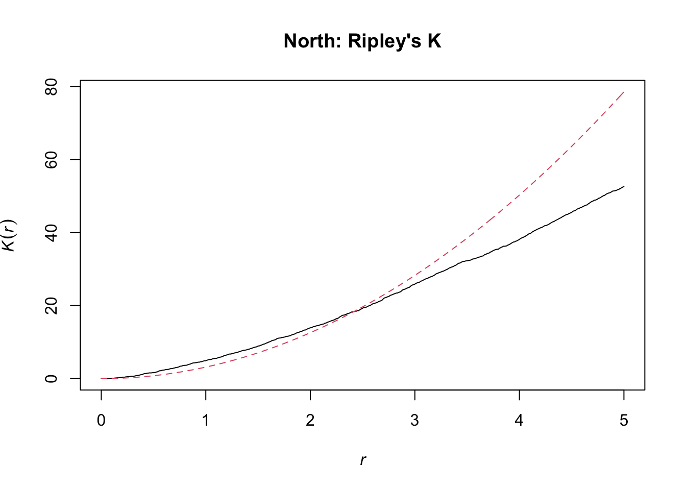
Monte Carlo simulations to calculate a global and pointwise confidence envelope under CSR
L_csr_vhu <- envelope(vhu_corals, rmax = 5.0, Lest, nsim = 99, rank = 1, correction = "trans", global = F)Generating 99 simulations of CSR ...
1, 2, 3, 4, 5, 6, 7, 8, 9, 10, 11, 12, 13, 14, 15, 16, 17, 18, 19, 20, 21, 22, 23, 24, 25, 26, 27, 28, 29, 30, 31, 32, 33, 34, 35, 36, 37, 38, 39, 40,
41, 42, 43, 44, 45, 46, 47, 48, 49, 50, 51, 52, 53, 54, 55, 56, 57, 58, 59, 60, 61, 62, 63, 64, 65, 66, 67, 68, 69, 70, 71, 72, 73, 74, 75, 76, 77, 78, 79, 80,
81, 82, 83, 84, 85, 86, 87, 88, 89, 90, 91, 92, 93, 94, 95, 96, 97, 98, 99.
Done.L_csr.g_vhu <- envelope(vhu_corals, rmax = 5.0, Lest, nsim = 99, rank = 1, correction = "trans", global = T)Generating 99 simulations of CSR ...
1, 2, 3, 4, 5, 6, 7, 8, 9, 10, 11, 12, 13, 14, 15, 16, 17, 18, 19, 20, 21, 22, 23, 24, 25, 26, 27, 28, 29, 30, 31, 32, 33, 34, 35, 36, 37, 38, 39, 40,
41, 42, 43, 44, 45, 46, 47, 48, 49, 50, 51, 52, 53, 54, 55, 56, 57, 58, 59, 60, 61, 62, 63, 64, 65, 66, 67, 68, 69, 70, 71, 72, 73, 74, 75, 76, 77, 78, 79, 80,
81, 82, 83, 84, 85, 86, 87, 88, 89, 90, 91, 92, 93, 94, 95, 96, 97, 98, 99.
Done.- Plot point-wise envelope
plot(L_csr_vhu, . - r ~ r, shade = c("hi", "lo"), legend = F, main = "Southeast: stand. L (Monte Carlo, CSR env)")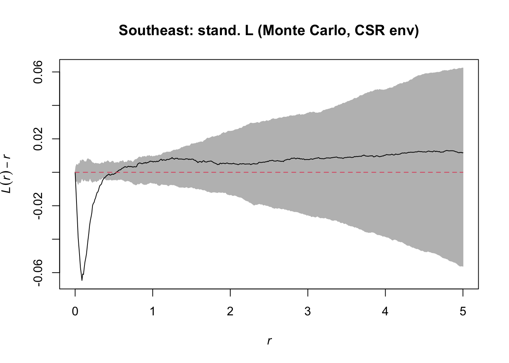
- Plot global envelope
plot(L_csr.g_vhu, . - r ~ r, shade = c("hi", "lo"), legend = F, main = "Southeast: stand. L (Monte Carlo, CSR env)")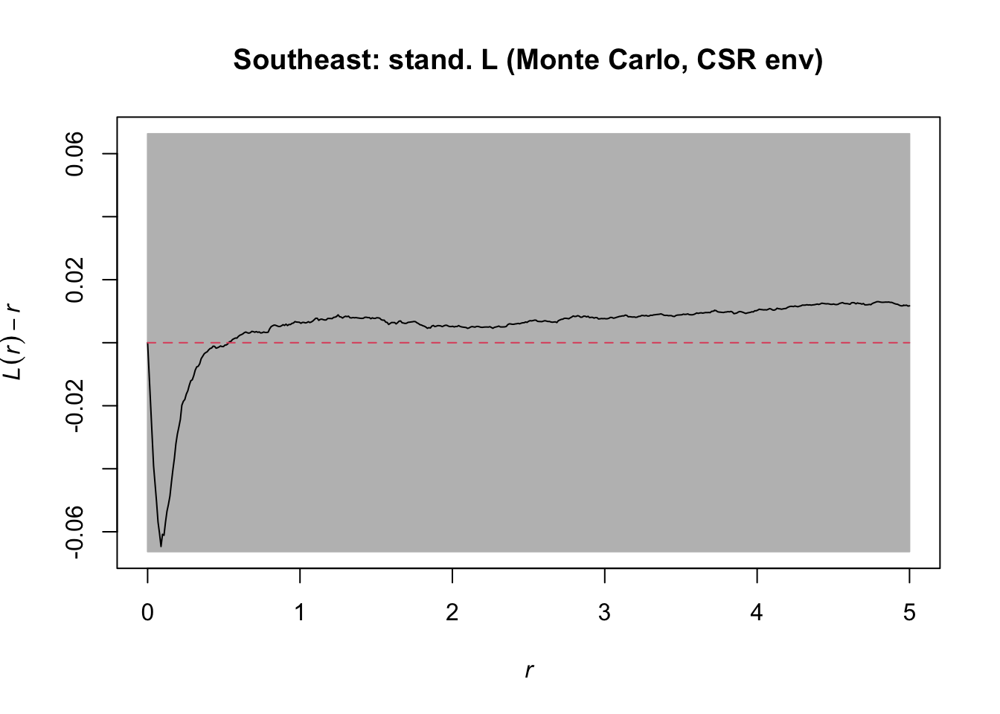
North - Anakena
K_none_ana <- Kest(ana_corals, rmax = 5.0, correction = "none")- Plot K
plot(K_none_ana, legend = F, main = "North: Ripley's K")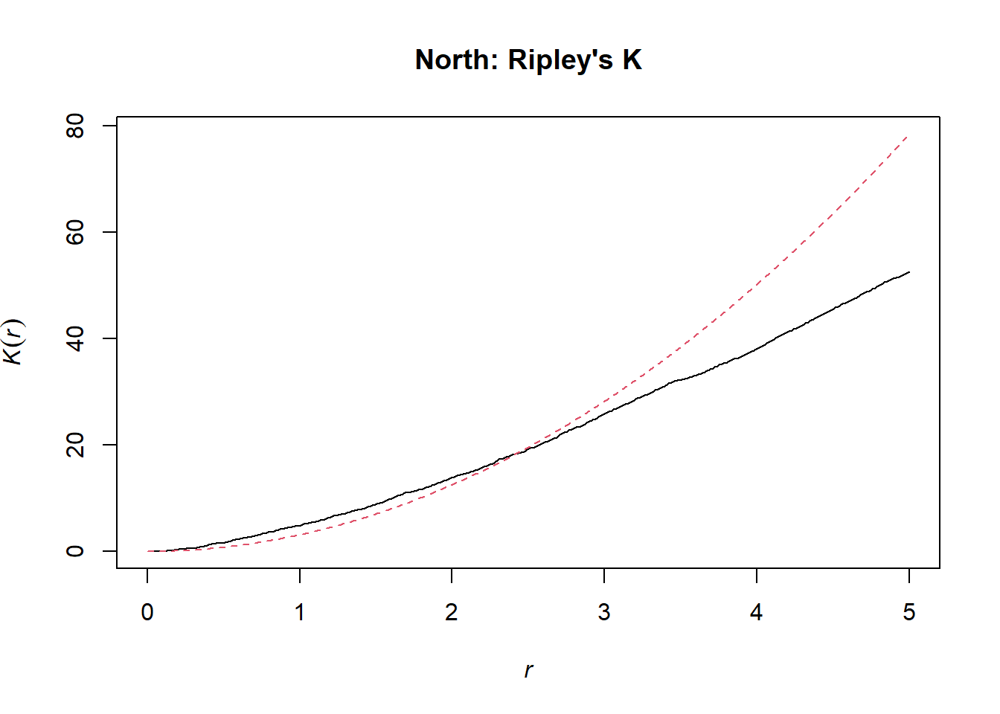
- Plot L with 1:1 expectation
L_none_ana <- Lest(ana_corals, rmax = 5.0, correction = "none")plot(L_none_ana, legend = F, main = "North: standardized L function (standardized 1:1)")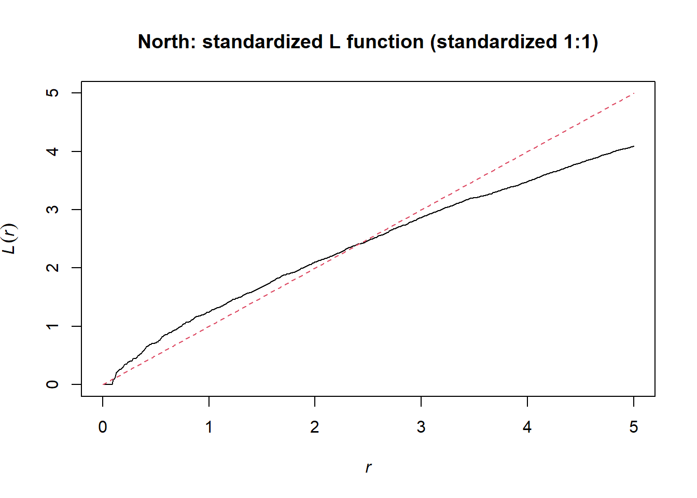
- Plot L with 0 expectation
plot(L_none_ana, . - r ~ r, legend = F, main = "North: standardized L function (standardized 0)")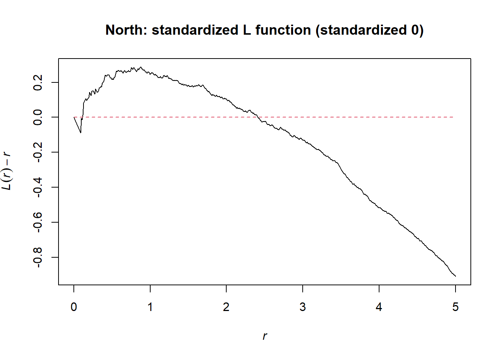
The above analysis ignores the problem of edge effects. spatstat provides a variety of edge corrections. Contrast an (1) isotropic and (2) translate correction for adjusting for boundary effects. The isotropic correction uses a simple weighting for the area sampled near the plot boundary (Ripley 1988), the translate correction uses a toroidal shift. We adjust for potential boundary effects by typing:
- Isotropic edge correction
L_iso_ana <- Lest(ana_corals, rmax = 5.0, correction = "isotropic")plot(L_iso_ana, . - r ~ r, legend = F, main = "North: standardzied L (isotropic correction)")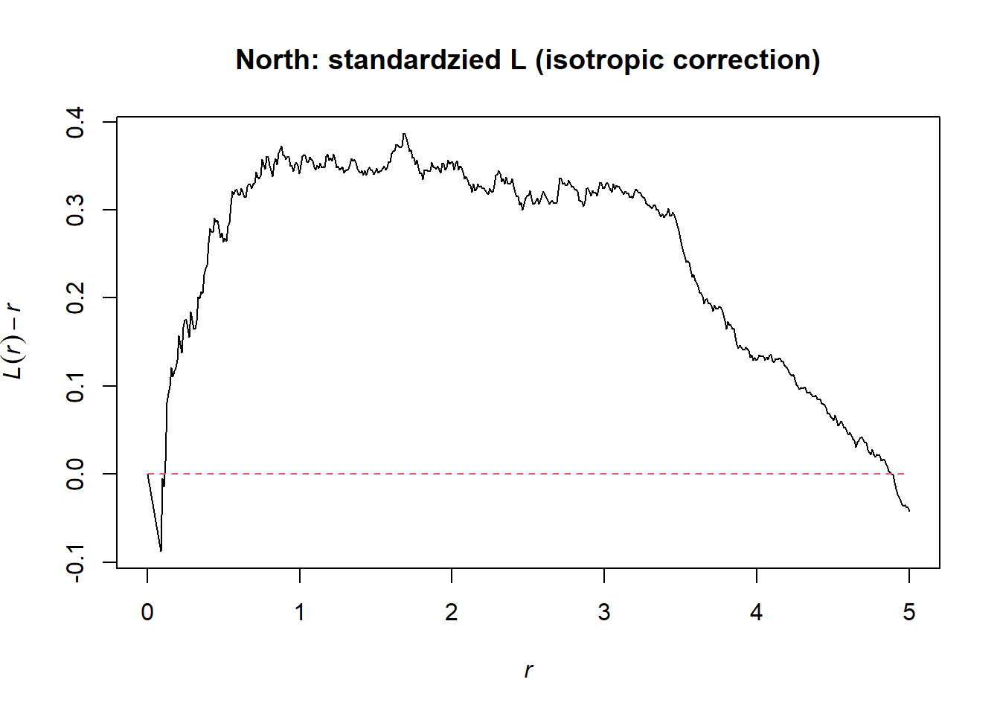
- Translate (toroidal) edge correction
L_trans_ana <- Lest(ana_corals, rmax = 5.0, correction = "trans")plot(L_trans_ana, . - r ~ r, legend = F, main = "North: standardzied L (translate correction)")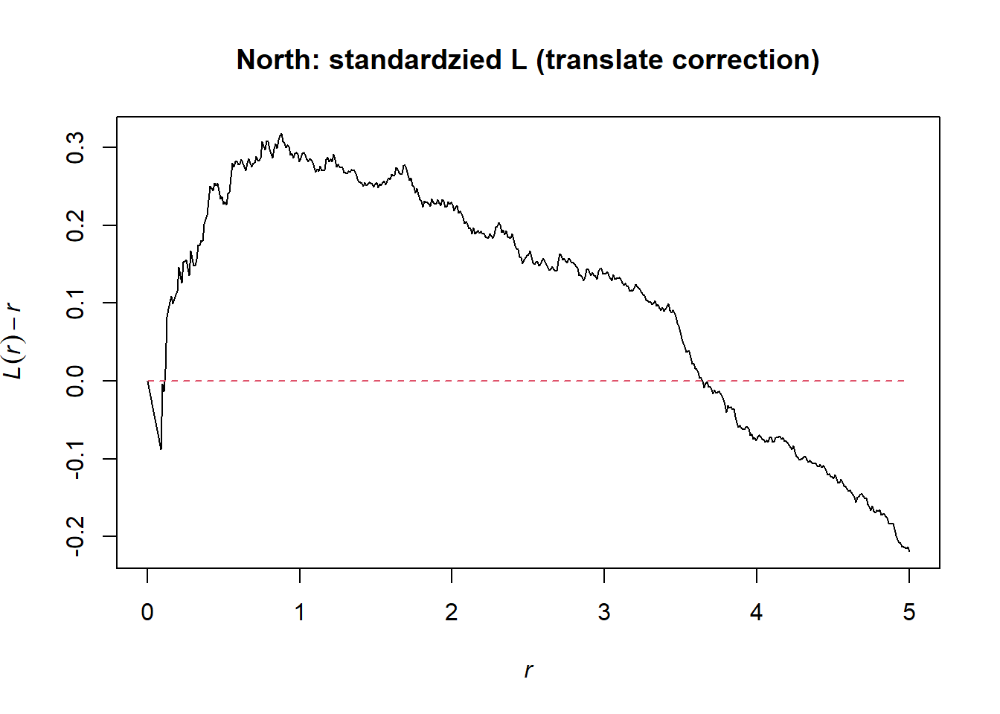
For the functions above, two lines are drawn. The \(L_{pois}\) line is a dashed line that represents the expected (theoretical) value based on a Poisson process (CSR). The way that spatstat calculates \(L\) is to linearize \(K\) such that the expected value is \(r\) (or the radius). The other solid line represents the estimated \(L\) (linearized \(K\)), when the edges are ignored.
When comparing the \(L\) function that ignores boundaries to those above that account for boundaries, notice that patterns change at larger distances - we expect that the \(L\) function at larger distances should potentially be more biased than at smaller distances because larger radii will naturally overlap more with the boundary of the study area.
When edge effects are ignored, the effect in the of counting fewer points within the radius \(r\) near the boundary, so the observed value for \(L\) or \(K\) should have an artifact of decreasing as \(r\) increases.
The analyses so far are exploratory. While the observed statistics (\(K\), \(L\)) appear different than the expectation, it is unclear if these are substantially (or significantly) different.
To conduct formal inference regarding if the point pattern follows CSR, we can use Monte Carlo simulations ro calculate a confidence envelope under CSR with the envelope function.
In the envelope function, rank specifies the alpha for the simulations. For a rank = 1, the max an min are used as the envelopes, such that for 99 simulations, alpha = 0.01 while for 19 simulations, alpha = 0.05.
Also not that we used global = FALSE. This means that these are pointwise envelopes.
These envelopes work better for \(L\) than \(K\) because of variance stabilizing properties.
Plots of pointwise envelopes show the stated upper and lower quantiles of simulated patterns for any distance r. Because such analyses are calculating envelopes for vhuy distances, pointwise envelopes with a specified alpha should not be used to reject a null model at that level (because of the multiple tests). Consequently, there are alternative global tests that can be used in this way. While global tests are under active development (Baddeley et al. 2014; Wiegand et al. 2016), spatstat does provide one option for a global test (using global = T).
This approach estimates the maximum deviation from the Poisson point process across all r (i.e., \(D = max|K_{(r)} - K_{pois(r)}|)\). This approach is referred to as a simultaneous envelope (or critical band) rather than a pointwise envelope.
If the observed line falls outside the simultaneous envelope at any point on \(r\), we would reject the null hypothesis.